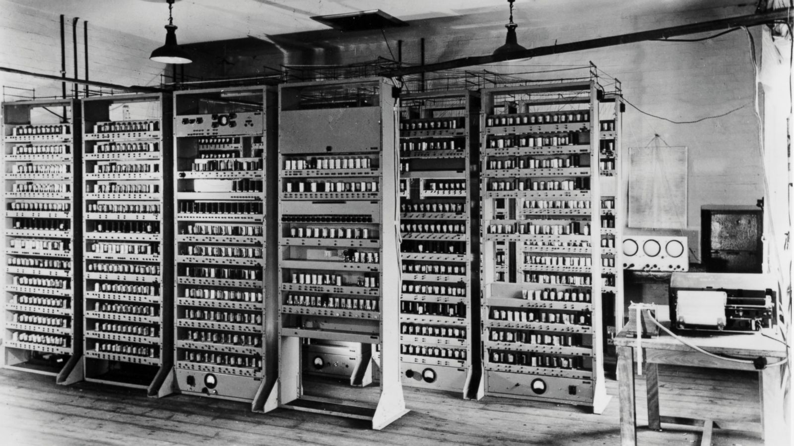
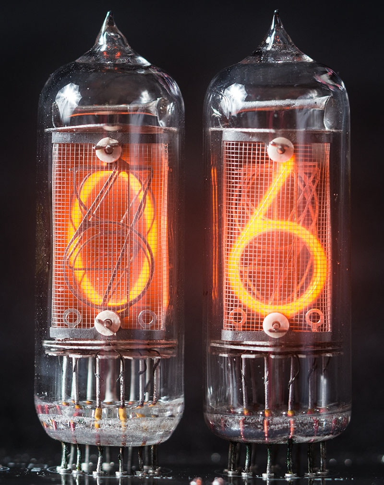

Вступление
Точное время изобретения компьютеров определить очень трудно. Их предшественники — механические вычислительные машины, например счеты, были придуманы человеком задолго до нашей эры.
Однако сам термин «компьютер» намного моложе и появился только в XX веке.

1936 — маши́на Тьюринга. 1937 — Z1, вычислительная машина, разработанная Конрадом Цузе, стала первым вычислительным устройством, работавшим на двоичной логике и применявшее арифметику с плавающей запятой. 1943 — «Марк I», первый компьютер, произведённый фирмой IBM.
Электронные лампы
Первое поколение ЭВМ создавалось на электронных лампах в период с 1944 по 1954 гг. Электронная лампа – это прибор, работа которого осуществляется за счет изменения потока электронов, двигающихся в вакууме от катода к аноду.
Использование электронных ламп омрачала их низкая надежность, высокое энергопотребление и большие габариты. Первые ЭВМ были поистине гигантских размеров и занимали несколько комнат в научно-исследовательских институтах. Обслуживание таких ЭВМ было крайне сложным и трудоемким, постоянно выходили из строя лампы, происходили сбои при вводе данных, и возникало множество других проблем.

Транзисторы
Первым компьютером, в котором использовались транзисторы, был Транзисторный компьютер Манчестерского университета. Транзисторный компьютер был построен в качестве прототипа, состоящего из транзисторов с 92 точками контакта и 550 диодами, и был полностью введен в эксплуатацию в 1953 году. Транзисторы используются в компьютерах и по сей день.
Другие компьютеры
Историю происхождения компьютеров вы, вероятно, уже не раз слышали. Транзисторные компьютеры уже прожили с нами достаточно давно, чтобы оставить впечатление своей незыблемости. Есть ли другие варианты? Можно ли заменить транзистор? И чем?